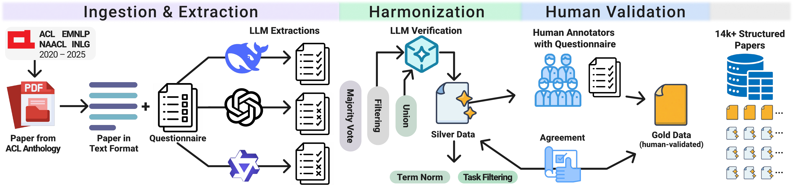

*Work done at TU Berlin and BIFOLD.
Conference on Empirical Methods in Natural Language Processing (EMNLP), 2026
As Natural Language Generation (NLG) dominates modern NLP, scalable evaluation remains a critical bottleneck. Consequently, LLM-as-a-judge (LaaJ) adoption has accelerated rapidly, appearing in more papers than human evaluation in 2025. This pivotal shift motivates a critical analysis of current evaluation practices. Overcoming the limits of rigid keyword filtering and manual review, we employ a multi-LLM information extraction pipeline to gather structured metadata from 14,171 papers across four major NLP conferences (2020–2025). Analyzing 3,334 filtered NLG papers, we identify three systemic challenges. (1) Metric inertia: despite the shift toward open-ended generation, legacy lexical metrics (BLEU, ROUGE) persist as primary indicators, typically used alongside rather than replaced by semantic alternatives. (2) Metric-criteria mapping problem: our paper-level co-occurrence data reveals that general-purpose automatic metrics are applied as broad proxies for quality, without specifying which dimension of text generation they are intended to evaluate. (3) Validation gap: LaaJ has grown rapidly without commensurate human validation (fewer than 8% of papers). Crucially, while LaaJ correlates with aggregate quality, alignment collapses on fine-grained criteria like fluency. To address these gaps, we distill our findings into a minimal Evaluation Checklist to guide metric selection, construct validity, and LaaJ deployment.
LaaJ adoption surged from less than 1% of papers before 2023 to 46% in 2025, surpassing human evaluation, which declined from 51% to 43%. Yet only 16% of 2025 papers explicitly validate LaaJ against human evaluation. Practices differ by task: dialogue generation, machine translation, text summarization and question answering account for 78% of the corpus, and machine translation relies almost exclusively on automatic metrics.
Loading corpus…

| Pair | Q1 NLG | Q2 Auto | Q3 LaaJ | Q4 Human |
|---|---|---|---|---|
| Human R1 vs. R2 | 81.8 | 80.0 | 89.1 | 91.8 |
| DeepSeek-R1 | 74.6 | 73.6 | 95.5 | 92.7 |
| GPT-OSS-120B | 75.5 | 75.5 | 90.9 | 90.9 |
| Qwen3-235B | 75.5 | 70.0 | 93.6 | 85.5 |
| Majority vote | 74.6 | 71.8 | 93.6 | 88.2 |
| LLM-harmonized | 77.3 | 74.6 | 95.5 | 90.0 |
Model rows report agreement with the human annotation. For Q3 and Q4, LLM–human agreement is comparable to or higher than the agreement between the two human annotation rounds.
Frequency P(B | A) is the proportion of papers containing term A that also contain term B; for example, 81.5% of MT papers report BLEU.
Likelihood ratio LR(A → B) = P(B | A) / P(B | ¬A) measures distinctiveness; for example, BLEU is 2.63 times more likely in MT papers than in other papers. LR > 1 indicates attraction and LR < 1 avoidance.
Statistical significance is assessed with Dunning’s G² test under Benjamini–Hochberg FDR correction; pairs with an adjusted p ≤ 0.05 are considered significant. All statistics on this page are computed from the paper-level data.
Main-conference papers from the ACL Anthology. Majority voting over three LLMs identifies 8,665 NLG papers; restricting these to the 30 most frequent NLG tasks yields the 3,334 papers analyzed on this page.
Despite the shift toward open-ended generation, legacy lexical metrics persist as primary indicators. BLEU appears in 81.5% of MT papers overall and declines only from 88.6% (2020) to 61.8% (2025), while COMET grows to 39.0% in 2025. Exact Match still anchors 27.1% of 2025 QA papers. Semantic metrics are typically used alongside rather than in place of lexical ones.
Figure 4. Annual frequency rank of the eight most frequent items in single-task papers. Marker size is proportional to the item's LR for the task in that year. Solid lines with filled markers denote items significantly associated with the task overall (G², BH-FDR-adjusted p ≤ 0.05); dashed grey lines with hollow markers denote frequent but non-distinctive items. Labels give (overall LR, number of papers). Color encodes the QCET dimension (dark grey for automatic metrics), and criteria are prefixed with it: QO intrinsic, QI relative to input, QT relative to target, QE relative to an external standard, AUX extension. Selecting a line lists the corresponding papers.
A metric and a criterion may both be characteristic of a task without co-occurring in the same papers. We therefore test metric–criterion association within each task. Significant associations concentrate among frequent metrics and frequent criteria, whereas task-distinctive metrics (e.g. FactCC, COMET) are rarely associated with task-distinctive criteria (e.g. factual truth, translation accuracy).
Figure 5. Within-task association between metrics and criteria. Shading encodes the co-occurrence LR, P(metric | criterion) / P(metric | ¬criterion), computed separately over the task's LaaJ papers (red, upper-left triangle) and human-evaluation papers (green, lower-right triangle). Outlined cells are significant (G², BH-FDR-adjusted p ≤ 0.05, at least 5 co-occurrences). Rows and columns contain the five most frequent items in the task followed by the five most task-distinctive items by task-LR (italics, beyond the dotted line). Selecting a cell lists the corresponding papers.
Of the 679 papers that employ LaaJ, 433 also conduct human evaluation, and 254 report the agreement between the two (37% of LaaJ papers; 7.6% of the corpus). Among the 179 papers that use both methods without comparing them, 76% assess at least one criterion with both, indicating that a comparison would have been feasible in most cases.
Figure 6. Reported LaaJ–human agreement per QCET criterion. Each point is one reported comparison value from the 70 papers with validation content in the 90-paper human-annotated subset; black ticks mark the mean per statistic. Only criteria with more than ten reported values are shown. LaaJ achieves moderately high correlations for aggregate Overall Quality, but alignment degrades on fine-grained criteria: Fluency and Coherence show median correlations near or below 0.4 with large variance, and LaaJ fails to align with humans on task usefulness.
All 3,334 papers with their extracted evaluation metadata. The filters define a selection that can be analyzed in the corpus explorer below; selecting an element in any chart lists its papers here.
| Paper | Venue | Tasks | Evaluation | Metrics |
|---|
A automatic metrics · L LLM-as-a-judge · H human · V LaaJ validated against humans. Select a row for all extracted metadata.
Custom analyses of all papers or of the papers selected in the section above. Selecting a chart element lists the underlying papers in the paper table.
NAACL was not held in 2020 or 2023.
To help researchers translate these challenges into practice, we propose a compact Evaluation Design Checklist. Task-specific recommendations for dialogue generation, machine translation, text summarization and question answering are given in Appendix D of the paper.
@inproceedings{yang2026measuring,
title = {What Are We Measuring in {NLG}? A Meta-Analysis of Evaluation Trends 2020--2025},
author = {Yang, Jing and Feldhus, Nils and Mohtaj, Salar and Hennig, Leonhard and
Wang, Qianli and Metheniti, Eleni and Hakimov, Sherzod and Jakob, Charlott and
Solopova, Veronika and Rieck, Konrad and Schlangen, David and
Möller, Sebastian and Schmitt, Vera},
booktitle = {Proceedings of the 2026 Conference on Empirical Methods in Natural Language Processing},
year = {2026},
note = {arXiv:2601.07648}
}